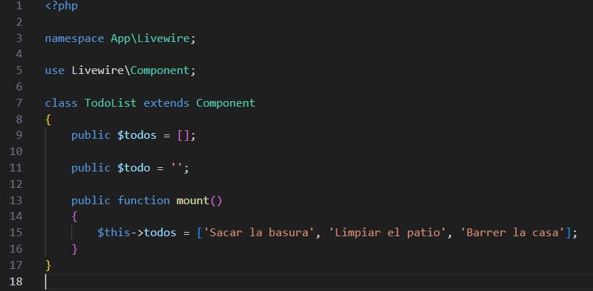
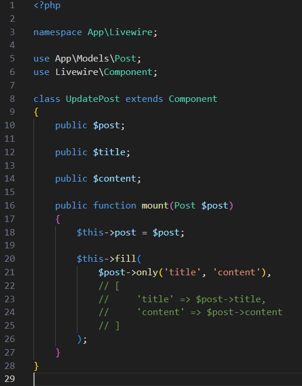
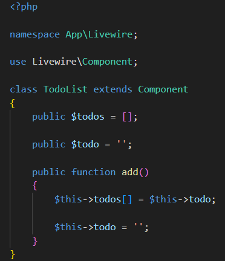
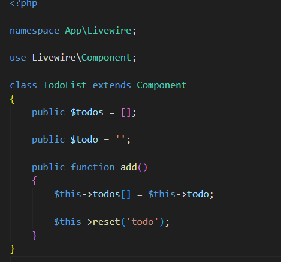

Puedes establecer valores iniciales para las propiedades dentro del método mount() del componente.
Considera el siguiente ejemplo:
En este ejemplo, definimos un arreglo de $todos vacio y lo inicializamos con todos en el metodo mount(). Ahora, cuando el componente se procesa por primera vez, se muestran al usuario todas las tareas entregadas en el método. Estas también podrían venir de la base de datos.
A veces, inicializar muchas propiedades en el método mount() puede parecer verboso. Para ayudar con esto, Livewire proporciona una manera conveniente de asignar múltiples propiedades a la vez mediante el método fill(). Al pasar un arreglo asociativo de nombres de propiedades y sus respectivos valores, puede establecer varias propiedades simultáneamente y reducir las líneas repetitivas de código en mount().
Por ejemplo:
Livewire admite el enlace de datos bidireccional a través del atributo HTML wire:model. Esto le permite sincronizar fácilmente datos entre las propiedades de los componentes y las entradas HTML, manteniendo sincronizados la interfaz de usuario y el estado del componente.
Usemos la directiva wire:model para vincular la propiedad $todo en un componente TodoList a un elemento de entrada básico:
Esto solo es un vistazo superficial del uso de wire:model.
A veces, es posible que necesite restablecer las propiedades a su estado inicial después de que el usuario realice una acción. En estos casos, Livewire proporciona el método reset() que acepta uno o más nombres de propiedades y restablece sus valores a su estado inicial.
reset() restablecerá una propiedad a su estado antes de que se llamara al método mount(). Si inicializó la propiedad en mount() con un valor diferente, deberá restablecer la propiedad manualmente.